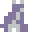

The Forged Curse Compendium
List of items, enemies you may encounter, and guides for The Forged Curse
Items

Hourglass
Use to rest, allowing for time to pass without an action. You can heal over time by resting continuously.
Cheese
Eat to heal 20 points and increase rate of healing when resting for a while. Found in both chests and loot drops.

Keys


Color coded keys that open doors of matching color.
Crowbar
Opens barricaded doorways. Does not destroy barrels.
Grappling Hook
Hooks onto wooden objects and pulls you to them. Can pull you over spikes and water!
Push Rod
A magic rod that pushes heavy rocks.
Anvil
Part of the forge. Place the anvil on its pedestal.

Hammer
Use on anvil after the forge's flame is rekindled to craft bolts.

Bellows
Pushes enemies away. Use to rekindle the forge flame.

Magic Crossbow
Shoot enemies and cursed barriers at range. Requires silver bolts.
Silver Bolts
Fire from crossbow. Craft at the forge once reconstructed.

cricket
Stuns enemies and weakens cursed barriers nearby. Long cooldown. It's the "secret ingredient"!

Bombs
Blow up cracked walls and barricaded doorways. Damages enemies (and you! watch out).

Blink Rod
Teleport over two spaces in any cardinal direction. Be careful not to blink into a wall! Ouch!

heart gem
Permanently increases your maximum health points by 10. There are at least five to find.

sword

Equip to increase attack power. wooden -> iron -> gold
armor


Equip to increase defense points. leather -> iron -> gold

silver bullion
Required to forge silver arrows and place bombs. Found in both chests and loot drops.
Enemies

Cave Spider
Regular cave spider. Watch out for it's web attack, it'll really slow you down!
Snake
Green snake, will attack and has a chance to poison on hit.

Bat
Bats will awaken and attack if you make too much noise. Try waiting between steps to sneak up on them.
 <- Sleeping bat
Kikku
Kikku is just a li'l guy. And watch out, Kikku kick you.
Amanita
Red, spotted mushroom that releases spores which cause mild confusion, mixing up your controls. Try to rest to remove effect faster.

Browncap
Brown mushroom that releases slow spores which cause the slow effect, reducing your speed. This allows enemies to take multiple turns before your next. Rest to remove effect faster.

Lionsmane
Large mushroom that releases weakess spores which cause the weak effect, decreasing your attack power. Rest to remove effect faster.

Gnoglic
Strange mushroom that releases poison spores which do damage every turn. As soon its safe, rest to remove effect faster and take less damage.
Pigcube
Looks like the PIGsquad mascot. How could we not include them for the game jam? Did you just kill cubepig!?

Shadow
It's a spooky shadow monster! Shadows are light sleepers but they're hard to spot until they wake up.
<- Sleeping shadow

Monstera
Will attack if you destroy its home. Why would you do that?
Snail
High defense, probably need a weapon of some kind to overcome the shell.
Banana Slug
How did a banana slug end up in a cave? It's slime sometimes has a strange effect.
Battle Crab
Large claw and tough shell makes for a dangerous foe. They're fast too!

Axolotl
Its jet spray can hit you from far away. What incredible aim!

Shrimp
A meager shrimp. Just attacks, nothing more.
Slime
Does the classic slime thing of splitting into smaller slimes.
Corrupted Kobold
There's something wrong with these kobolds, like they're corrupted by an unknown power. Perhaps there is a cure...

Eyebat
Like the regular bats but somehow tougher.
 <- Sleeping bat
<- Sleeping bat

Reecher
Its hand can attack at a distance but its home is fragile. Packs a punch!

Mimic
Beware of chests. One could be a mimic and you don't want to deal with that.
Potmimic
Beware of pots as well. One could be a pot mimic and you don't want to deal with that either.
Dragon Skull
The indestructable skull of a dragon whelp, cruelly reanimated to endlessly breathe fireballs on unwanted guests.
Li'l Wiz
They may be little but they've got big eyebrows.
Maps and Guides
Play strategically
Just Ramming your face into every enemy is a sure way to die often. It's on a tick system so you can plan out your actions. Look for opportunities to retreat, hide, and rest when your health gets low.
Vanilla version
While The Forged Curse was designed with Archipelago in mind, it was also made to stand alone as a classic adventure first! Playing the og version of the game will help you learn for randomizer.
Pebbles + Bombs
Pebbles prevent pushable objects from moving. You can use bombs to destroy pebbles. Sometimes pebbles have been placed to prevent soft lock; be careful with the push rod.
Line of Sight
Enemies wander but only give chase when they can see you.
Equipping
Weapons and armor do not automatically equip when received. Don't forget to equip them!
Original/Vanilla Map
Original/Vanilla Guide
A succinct guide to help you through the original game. This is not an optimized route and will not go over every chest or explain puzzles; it's just an outline of one possible path.
Part 1: New Moon Rotunda
- Open chests 17, 24, and 26 in the caverns to get the crowbar, wooden sword, and leather armor.
- Now that you have a weapon and armor, go back to chest 15 to get the Heart Gem.
- Head to the Mushroom Hall and get the Red Key in chest 31 and the anvil in chest 35.
- From the red door, go through the crowbar maze in the dwarven halls to get the orange key in chest 28.
- Face the shadows in the New Moon Rotunda and claim the grappling hook in chest 9.
Part 2: Waxing Moon Rotunda
- Head back to the Mushroom Hall and go through the orange key door into the Waxing Moon Rotunda. Get the push rod from chest 33.
- Go to the Kobold Village from the orange door in the starting area.
- Get the map from check 54 and the green key from chest 7 then head towards the north shore.
- From the temple, get the blue key from chest 5 and the crossbow from chest 8. The Kobold priest hints at how to get into the sealed halls.
- Get the hammer from chest 4 in the kobold caves. From the green door, head through the Dwarven Halls back to the Waxing Moon Rotunda. Get the bellows from chest 30.
Part 3: Full Moon Rotunda
- Enter the Pigcube den from the green door in the Dwarven Halls or the blue door from the Mushroom Hall.
- Make your way to Forge Storage and get weapon and armor upgrades in chests 40 and 41. If you missed chest 35, open it for the anvil on your way out.
- Head to the Forge and forge the silver bolts from check 55 using the anvil, bellows, and hammer.
- Make your way back through the kobold village towards the Fortress grounds and enter the River Fortress.
- On the south side of the River Fortress, make sure to grab chest 53 for another Heart Gem.
- Defeat the boss in the Full Moon Rotunda and get the boat from chest 48 in the Apogee Mage Grave.
Part 4: Waning Moon Rotunda
- Exit the River Fortress, hitting up slime island and grab the gold sword from chest 23.
- Head to the secret ingredient room and get chest 36 for the albino cricket.
- Backtrack to the Eclipse Knight sanctuary and get the white key from chest 2 and head back to the starting area.
- Use the hints from the Kobold Priest to destroy the barrier and enter the Sealed Halls (It involves the crossbow and the cricket).
- Get chest 42 from the pot maze in the Sealed Halls.
- optional: From here, there's some useful items you can find. Chest 22 for gold armor, then 10 in the mushroom cave for the blink rod, and finally 39 and 1 to get two more heart gems.
- Make your way through the Sealed halls, grappling hook room, and sealed depths. If you want another Heart Gem, go to the secret storage and open chest 51.
- Defeat the Big Wiz in the Waning Moon Rotunda and make your way to the crescent artificer grave for victory chest. Use it.